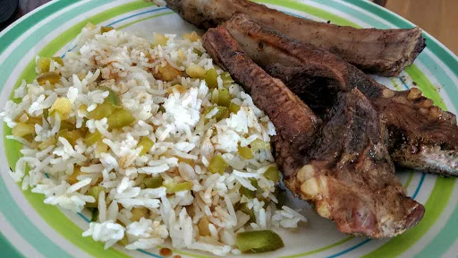

Sticky jerk & brown sugar ribs with pineapple rice

Stacks of pork ribs make an alternative to chicken in this Caribbean feast with sticky marinade and fruity basmati accompaniment
Servings:4
Total: 2 hr 40 mins
Ingredients
For the ribs
2x 500 g racks pork ribs
3 tbsp jerk seasoning
600 ml pineapple juice
5 tbsp dark soft brown sugar
4 tbsp cider vinegar
juice 1 lime
For the rice
1 tbsp vegetable oil
1 large banana shallot, finely sliced
1 green pepper, deseeded and finely diced
200 g pack fresh pineapple chunks, finely diced
2 tsp brown sugar
200 g basmati rice, cooked and cooled
small bunch coriander, chopped
Instructions
Lay the
ribs2x 500 g racks
in a roasting tin and rub all over with 2 tbsp of the
jerk spice3 tbsp
mix. Leave to marinate for at least 2 hrs, or preferably overnight.
Heat oven to 140°C/Gas 3. Put the
ribs2x 500 g racks
in a clean roasting tin, season and pour over 500 ml of the
pineapple juice600 ml
. Cover the tin with foil and bake for 2 hrs.
Mix the remaining
jerk spice3 tbsp
mix,
pineapple juice600 ml
, sugar,
vinegar4 tbsp
, lime juice and a good pinch of salt in a saucepan. Heat until the sugar dissolves, then bubble until thick and sticky.
To make the rice, heat the
oil1 tbsp
in a large pan or wok. Add the
shallot1 large
and
pepper1
, and stir-fry until softened. Add the
pineapple chunks200 g
,
brown sugar5 tbsp
and plenty of seasoning, and continue cooking until the pineapple starts to caramelise.
Remove the
ribs2x 500 g racks
from the oven and pour away the cooking liquid. Increase oven to 180°C/Gas 6. Pat the
ribs2x 500 g racks
dry with some kitchen paper, then brush the jerk sauce all over them. Return to the oven for 20 mins, brushing with any remaining sauce every 5 mins or so, until the
ribs2x 500 g racks
are really sticky.
Add the cooked rice to the pan with the pineapple and vegetables, stir-fry for a further 2 mins, stirring occasionally, then add the